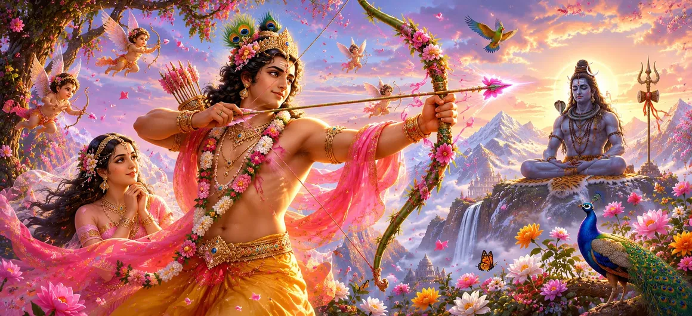

Among the many divine forces that govern creation, Kāma occupies a unique and powerful place. Known as the god of love and desire, he possesses the ability to influence the hearts and minds of all beings, from ordinary mortals to mighty gods and sages. His power is subtle yet irresistible, capable of awakening attraction, affection, longing, and emotional attachment throughout the universe.
The sages taught that without desire, creation itself could not continue. Through Kāma, beings are inspired to form relationships, create families, and participate in the ongoing cycle of life. Although desire can lead to attachment when uncontrolled, it also serves an important purpose within the Divine plan. Thus, Kāma represents both a blessing and a challenge, depending upon how his influence is understood and directed.
Kāma is traditionally described as a youthful and radiant deity whose beauty rivals that of the celestial beings. He carries a bow made of sugarcane and five flower-tipped arrows, each capable of stirring different emotions within the heart. Accompanied by fragrant breezes, blossoming flowers, and the spirit of spring, he moves unseen through the worlds, influencing minds and emotions.
Unlike ordinary weapons, Kāma’s arrows do not wound the body. Instead, they touch the mind and heart, awakening feelings of attraction, affection, longing, and desire. Even those who possess great knowledge and strength may feel their influence. This extraordinary ability made Kāma one of the most powerful forces within creation.
The influence of Kāma extends across all realms of existence. Gods, celestial beings, humans, and even certain sages are affected by his presence. Through his power, relationships are formed, families grow, and life continues its sacred cycle. In this way, Kāma serves an important role in sustaining the world.
The sages explained that desire possesses two sides. When guided by wisdom and righteousness, it contributes to harmony, family life, and spiritual progress. However, when uncontrolled, it can lead to attachment, delusion, and suffering. Therefore, understanding the true nature of Kāma is essential for those who seek both worldly balance and spiritual growth.
The first influence awakens interest and draws hearts toward one another.
It nurtures feelings of fondness, tenderness, and emotional connection.
The strongest influence awakens longing and passionate desire.
Although many viewed Kāma merely as the god of desire, the wise understood that he was an essential part of the cosmic order. Through his influence, creation continued, families flourished, and beings participated in the unfolding purpose of life. His power was therefore neither entirely worldly nor entirely spiritual—it stood between the two.
The scriptures often remind seekers that even the wisest individuals remain cautious regarding the power of desire. Great sages practiced discipline and meditation to maintain mastery over their minds. They recognized that desire itself is not the enemy; rather, the lack of control over desire leads to suffering.
Because of his success in influencing countless beings, Kāma became confident in the strength of his power. He had witnessed kings, celestial beings, and even ascetics respond to his arrows. This confidence would soon lead him toward a challenge unlike any he had ever faced before.
As the gods observed the growing influence of Kāma, they began to consider how his unique abilities might serve a greater purpose. A crucial mission was approaching—one that would involve Lord Shiva Himself. The events that followed would reveal both the immense power of Kāma and the limits of that power before the Supreme.
The Shiva Purana teaches that desire is a force that can either elevate or bind the soul. When directed toward righteousness and devotion, it becomes a means of growth. When driven by ego and attachment, it becomes a source of suffering.
The sages emphasized that life requires balance. Desire has its place within creation, but it must remain guided by wisdom and dharma. When desire serves higher principles, it contributes to harmony and well-being. When it dominates the mind, it obscures truth and leads beings away from spiritual fulfillment.
As concerns grew among the gods regarding the future of the universe, they increasingly looked toward Kāma as a possible solution. His influence over hearts and minds seemed unmatched. The divine assembly began to consider whether the god of love could accomplish a task that no one else could undertake.
Kāma had influenced countless beings, but the task that now approached was unlike anything he had encountered before. The one whom the gods wished him to influence was none other than Lord Shiva—the supreme ascetic whose mind remained absorbed in meditation and detached from worldly distractions.
The story now reaches a crucial turning point. Kāma's extraordinary power has been revealed, the gods have recognized his importance, and a divine mission stands before him. The next chapter will show how these forces begin to converge and what happens when the power of desire approaches the Lord of Yogis.
"Desire is neither friend nor enemy. Guided by wisdom, it becomes a path toward creation and harmony; guided by ignorance, it becomes a source of bondage. The wise learn to master desire rather than be mastered by it."
With the arrival of Vasanta, the universe was prepared for important divine events. As the cosmic plan continued to unfold, Lord Brahmā and Lord Viṣṇu engaged in a profound discussion concerning creation, destiny, and the future course of events. Their dialogue reveals deeper truths about the Divine order and the purpose behind the unfolding drama of Sati Khanda.